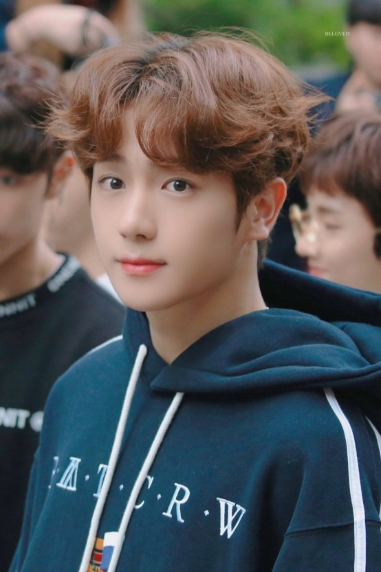

- 현재
- 영훈
- 주연
현재
그룹 내 포지션은 리드보컬이다. 맑지만 단단한 목소리로 메인보컬 라인과 비슷하거나 그보다 더 많은 파트를 맡고 있다. 또한 대부분의 보컬 콜라보 무대의 대표로 나가는 멤버이기도 하다.
4세대 남자 아이돌 대표 자연미남으로 180의 큰 키와 넓은 어깨, 높은 콧대와 상반되는 청순함과 섹시한 이미지를 동시에 지닌 더보이즈의 비주얼 멤버이다. 비주얼로 아이돌판에서 주목도가 매우 높은데, 각종 커뮤니티에서 자연미남으로 꼽히는 대표적인 아이돌이다. 원판 불변 남자아이돌 4위에 오른 적도 있다.

2018년 방송된 추석특집 아육대에서는 족구 경기 중 전광판에 약 5초간 잡혀 타팬들과 시청자의 감탄을 자아냈다. 아육대 방영 이후 실시간 검색어에도 이름을 올리며 일명 아육대 전광판 걔로 불리며 많은 주목을 받았다.